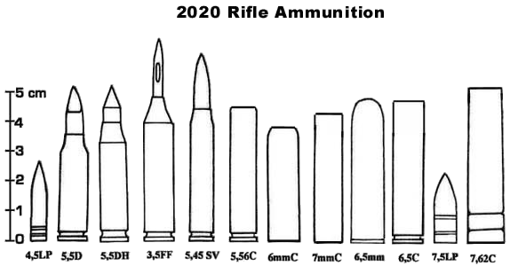

RIFLE AMMUNITION
The following ammunitions are intended for rifles and carbines.
Old ammunitions
These munitions have been around since the twentieth century. In 2020, they are occasionally found in caseless version, but some have never been adapted to modern standards.
| Abbreviation .30 |
Designation .30 Carabine |
Damage 2D6+3 |
Cost for 10 $6 |

MODERN AMMUNITION
The following ammunitions are commonly used in 2020. Unlike handguns, most of the old standards have fallen into disuse, as they no longer correspond to what we are looking for, especially with an assault rifle : a charge powerful enough to pierce rigid armor, such as those generally used by armed forces. The smallest calibers are reserved for civilian use, in the defense of private property.
| Abbreviation 4.5 mm LP |
Designation 4.5 mm Liquid Propellant |
Damage 4D6 |
Cost for 10 $2 |
AP (Armor Piercing) : halve armor value, normal damage beyond armor.
